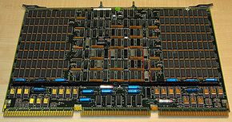
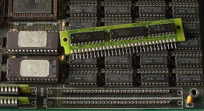
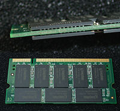

4.- Memoria RAM
Concepto. La memoria de acceso aleatorio (en inglés: Random Access Memory cuyo acrónimo es RAM) es la memoria desde donde el procesador recibe las instrucciones y guarda los resultados. Es el área de trabajo para la mayor parte del software de un computador.[] Existe una memoria intermedia entre el procesador y la RAM, llamada caché, pero ésta sólo es una copia de acceso rápido de la memoria principal almacenada en los módulos de RAM.[] Los módulos de RAM son la presentación comercial de este tipo de memoria, se compone de integrados soldados sobre un circuito impreso. Integrado de silicio de 64 Bites sobre un sector de memoria de núcleo (finales de los 60) Historia La denominación “de Acceso aleatorio” surgió para diferenciarlas de las memoria de acceso secuencial, debido a que en los comienzos de la computación, las memorias principales (o primarias) de las computadoras eran siempre de tipo RAM y las memorias secundarias (o masivas) eran de acceso secuencial (cintas o tarjetas perforadas). Es frecuente pues que se hable de memoria RAM para hacer referencia a la memoria principal de una computadora, pero actualmente la denominación no es precisa.

 Módulo de memoria tipo SIPP instalados directamente sobre la placa base
Inspirado en técnicas como el "Burst Mode" usado en procesadores como el Intel 486,[ se implanto un modo direccionamiento en el que el controlador de memoria envía una sola dirección y recibe a cambio esa y varias consecutivas sin necesidad de generar todas las direcciones. Esto supone un ahorro de tiempos ya que ciertas operaciones son repetitivas cuando se desea acceder a muchas posiciones consecutivas. Funciona como si deseáramos visitar todas las casas en una calle: después de la primera vez no seria necesario decir el número de la calle, únicamente seguir la misma. Se fabricaban con tiempos de acceso de 70 ó 60 ns y fueron muy populares en sistemas basados en el 486 y los primeros Pentium.
Lanzada en 1995 y con tiempos de accesos de 40 o 30ns suponia una mejora sobre su antecesora la FPM. La EDO, también es capaz de enviar direcciones contiguas pero direcciona la columna que va utilizar mientras que se lee la información de la columna anterior, dando como resultado una eliminación de estados de espera, manteniendo activo el buffer de salida hasta que comienza el próximo ciclo de lectura.
Fue la evolución de la EDO RAM y competidora de la SDRAM, fue presentada en 1997. Era un tipo de memoria que usaba generadores internos de direcciones y accedía a mas de una posición de memoria en cada ciclo de reloj, de manera que lograba un desempeño un 50% mejor que la EDO. Nunca salio al mercado, dado que Intel y otros fabricantes se decidieron por esquemas de memoria sincrónicos que si bien tenían mucho del direccionamiento MOSTEK, agregan funcionalidades distintas como señales de reloj. Módulos de memoria RAMLos módulos de memoria RAM son tarjetas de circuito impreso que tienen soldados integrados de memoria DRAM por una o ambas caras. La implementación DRAM se basa en una topología de circuito electrónico que permite alcanzar densidades altas de memoria por cantidad de transistores, logrando integrados de cientos o miles de Kilobits. Además de DRAM, los módulos poseen un integrado que permiten la identificación del mismo ante el computador por medio del protocolo de comunicación SPD. La conexión con los demás componentes se realiza por medio de un área de pines en uno de los filos del circuito impreso, que permiten que el modulo al ser instalado en un zócalo apropiado de la placa base, tenga buena conexión eléctrica con los controladores de memoria y las fuentes de alimentación. Los primeros módulos comerciales de memoria eran SIPP de formato propietario, es decir no había un estándar entre distintas marcas. La necesidad de hacer intercambiable los módulos y de utilizar integrados de distintos fabricantes condujo al establecimiento de estándares de la industria como los JEDEC.
 Formato SO-DIMM
|
|---|